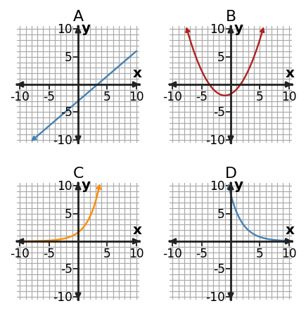

1. Classify the relationship as linear, quadratic, or exponential. Support your choice using differences or ratios.
| x | y |
|---|---|
| 0 | 2 |
| 1 | 6 |
| 2 | 10 |
| 3 | 14 |
| 4 | 18 |
2. Use the four graphs to identify the two exponential graphs. Which one shows growth and which one shows decay?

3. At $x=3$, compare the outputs of $L(x)=2x+4$, $Q(x)=x^2$, and $E(x)=2^x$. Which is greatest at this input? Explain why one input is not enough to compare long-term growth.
4. Classify $y=-2(x-1)^2+5$ as linear, quadratic, or exponential. Name one equation feature that supports your classification.
5. An amount triples every 4 hours. Which function family is the most natural model? Explain using the way the quantity changes.
6. Classify the relationship as linear, quadratic, or exponential. Support your choice using differences or ratios.
| x | y |
|---|---|
| 0 | 1 |
| 1 | 4 |
| 2 | 9 |
| 3 | 16 |
| 4 | 25 |